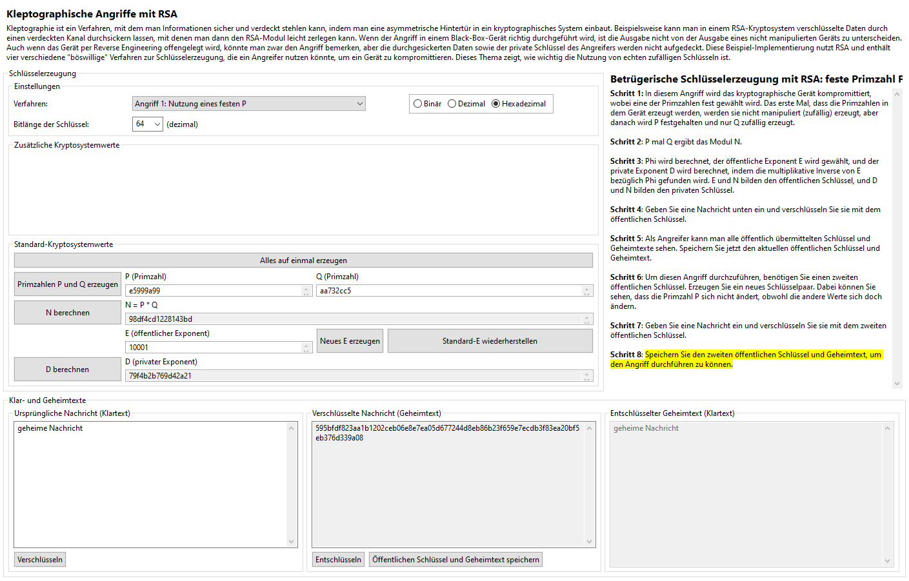
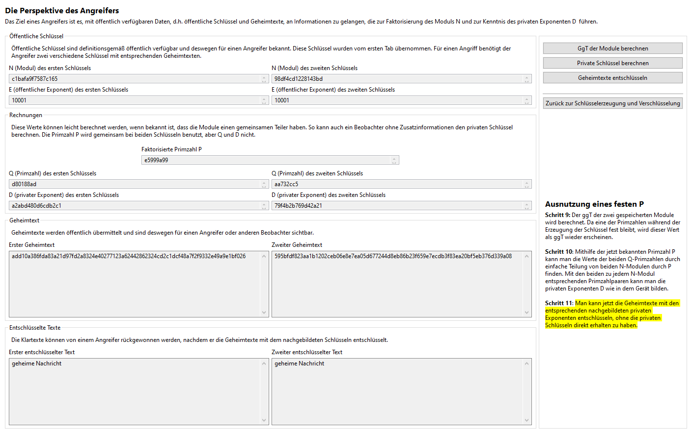
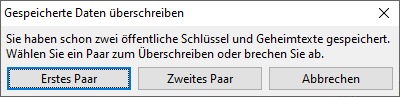
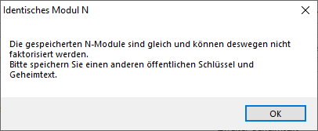

Oberflächlich sieht die Benutzerschnittstelle des festen-P-Angriffs ähnlich wie die der nicht manipulierten Schlüsselerzeugung aus. Es gibt aber zwei neue Objekte zu sehen: einen Button, der unten neben dem Button "Entschlüsseln" liegt namens "Öffentlicher Schlüssel und Geheimtext speichern", und einen Tab, der ganz oben liegt und "Angriff mit festem P" heißt:

Diese zwei Objekte werden in Kürze beschrieben, aber zuerst werden wir die Idee hinter diesem Angriff erklären, die aus Absatz 11.2.1 des Buches [YY04] adaptiert wurde. Die Idee ist einfach: Eine der Primzahlen, die im kryptografischen Gerät benutzt wird, um Schlüsseln zu erzeugen, wird festgehalten. Für den normalen Zuschauer wird nichts anders scheinen, weil die Primzahlen nie von dem Benutzer gesehen werden, und der öffentliche und der private Schlüssel werden immer noch zufällig erscheinen - wegen der zufälligen Wahl der anderen Primzahl. Der Angreifer muss jedoch nur zwei unterschiedliche öffentliche Schlüssel von dem Gerät finden und dann den größten gemeinsamen Teiler der Moduli N der beiden Schlüssel berechnen. Dieser Wert ist die Primzahl P, and die zweite Primzahl Q kann man dann berechnen, indem man N durch P teilt. Da der öffentliche Exponent E schon bekannt ist (weil es ja öffentlich ist), kann man D genau wie in dem Gerät berechnen.
Das Problem ist, dass jeder das Nachrechnen ausführen kann, nicht nur der Angreifer, der das kryptografische Gerät mit dieser Schwäche konstruiert bzw. modifiziert hat. Deswegen kann jeder beliebige Beobachter, der den gemeinsamen Teiler von allen erzeugten Moduli bemerkt, den Angriff auch ausführen. Weil der Angriff so leicht zu entdecken und nachzubilden ist, ist das Gerät in jedem Fall kompromittiert.
Mit diesem Algorithmus kann man auch den Angreifer (bzw. neugierigen Zuschauer) simulieren. Nachdem man eine Nachricht verschlüsselt hat (egal ob man den Empfänger simuliert hat und die Nachricht mit dem privaten Schlüssel entschlüsselt hat), kann man den Button "Öffentlichen Schlüssel und Geheimtext speichern" klicken, um den Geheimtext und den entsprechenden öffentlichen Schlüssel zu speichern, denn beide werden öffentlich übermittelt und sind deswegen auch verfügbar für jeden, der die ausgehende Kommunikation beobachtet. Nachdem man ein zweites Schlüsselpaar erzeugt hat (wobei die Primzahl P automatisch festgehalten wird), und einen zweiten Text mit dem neuen Schlüssel verschlüsselt hat, sollte man wieder beides speichern. Dann wird man automatisch zu dem Tab "Angriff mit festem P" gebracht:

Auf diesem Tab kann man beide gespeicherten öffentlichen Schlüssel und beide Geheimtexte sehen. An dieser Stelle simuliert man den Angreifer oder Beobachter ganz, indem man den größten gemeinsamen Teiler und folglich die privaten Schlüssel (wie oben beschrieben) findet. Mit den wiedergewonnenen Schlüsseln kann man die gespeicherte Nachrichten entschlüsseln und prüfen, ob der Angriff wie geplant funktioniert hat.
Wenn Sie zurück zum ersten Tab ("Schlüsselerzeugung und Verschlüsselung") gehen, kann man einen neuen Schlüssel und Geheimtext erzeugen und speichern, wobei das Programm dann fragt, welche von den schon erzeugten Schlüsseln und Geheimtexten es überschreiben soll:

Sie sollen auch bemerken, dass wenn man zwei Geheimtexte mit dem gleichen öffentlichen Schlüssel speichert, wird der Angriff nicht funktionieren; die Moduli N werden dann gleich sein, und der größte gemeinsame Teiler wird genau dieses, anstatt der festen Primzahl P. Das Programm wird davor warnen, falls man es versucht:

Klicken Sie hier, um zurück zum Kleptographie-Index zu gehen, oder hier, um zur nächsten Seite (Erzeugung von P durch eine Pseudozufallsfunktion) zu gehen.
[YY04] A. Young, M. Yung, Malicious Cryptography: Exposing Cryptovirology, John Wiley & Sons, 2004.